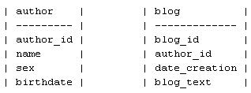
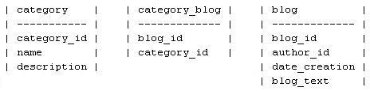

|
|
| Home | Download | Quick sample |
Tutorial (4)
|
Manual (2)
|
Forum | Our customers |
| QxOrm >> Tutorial >> qxBlog |
|
For more details about 'multi-columns primary key' : read the manual here. 1- qxBlog project - blog management in C++ :
2- all files in qxBlog project :
Note : tutorial source code is available in
./test/qxBlog/ folder of your QxOrm package.
5- precompiled.h file : precompiled header file reduces compilation times of a C++ project. QxOrm uses meta-programming concept to provide a lot of functionalities. meta-programming is costly in compilation times, so your project will be compiled much more quickly with the file precompiled.h. Last but not least, another advantage is that the file QxOrm.h includes the basic functionalities of libraries boost and Qt. It is thus not necessary anymore to write #include <QtCore/QString.h> to use the class QString of Qt for example. In the same way, there is no need anymore to write #include <boost/shared_ptr.hpp> to use smart pointers of boost library.
6- author.h and author.cpp (relationship one-to-many) : 1 author can write many blog : we will see how to use relationship one-to-many. In the database, there is 2 tables :  In the C++ source code, the properties of author class belong to columns of author table in the database. So 1 instance of author class in the C++ source code belong to 1 row of author table in the database. This mechanism provides C++ source code easy to develop and to maintain. We add 1 method to our author class : int age() to retrieve the age with the data returned by the database. We define also 2 typedef : a smart-pointer to an object author, and a list of author. author class need an id of QString type (by default, QxOrm provides id of long type) : we use the macro QX_REGISTER_PRIMARY_KEY(author, QString) to specialize the template.
7- comment.h and comment.cpp (relationship many-to-one) : 1 comment belongs to 1 blog and 1 blog can contain many comment : we will see how to use relationship many-to-one. In the database, there is 2 tables :  Like author class, we define 2 typedef : a smart-pointer to a comment object and a list of comment.
8- category.h and category.cpp (relationship many-to-many) : 1 category contains many blog and 1 blog can be put inside many category : we will see how to use relationship many-to-many. This kind of relationship need a new table in the database to save the list of id for each relationship. So in the database, there is 3 tables :  Like author class and comment class, we define 2 typedef : a smart-pointer to a category object and a list of category.
9- blog.h and blog.cpp (relationship one-to-many, many-to-one and many-to-many) : 1 blog is written by 1 author, can have many comment and can be put inside many category. So this class has 3 relationships : one-to-many, many-to-one and many-to-many. Like other classes, we define 2 typedef : a smart-pointer to a blog object and a list of blog.
10- main.cpp file : QxOrm can communicate with many databases (see the list of databases in Qt web site) => persistence. QxOrm provides also 2 other important functionalities :
Click here to see output debug trace after execution of qxBlog program...
[QxOrm] qx::QxSqlDatabase : create new database connection in thread '4456' with key '{e986c95d-1cb0-4368-ad9c-3dd4ccd20b84}'
[QxOrm] sql query (93 ms) : DELETE FROM author
[QxOrm] sql query (63 ms) : DELETE FROM comment
[QxOrm] sql query (94 ms) : DELETE FROM category
[QxOrm] sql query (78 ms) : DELETE FROM blog
[QxOrm] sql query (62 ms) : INSERT INTO author (author_id, name, birthdate, sex) VALUES (:author_id, :name, :birthdate, :sex)
[QxOrm] sql query (0 ms) : SELECT COUNT(*) FROM author
[QxOrm] sql query (0 ms) : SELECT author.author_id AS author_author_id_0, author.name AS author_name_0, author.birthdate AS author_birthdate_0, author.sex AS author_sex_0 FROM author WHERE author.sex = :sex
[QxOrm] start dump 'qx::QxCollection<QString, boost::shared_ptr<author>>'
<qx.QxCollection-QString_boost.shared_ptr-author-- class_id="0" tracking_level="0" version="0">
<count>2</count>
<item class_id="1" tracking_level="0" version="0">
<first class_id="2" tracking_level="0" version="0">author_id_2</first>
<second class_id="3" tracking_level="0" version="1">
<px class_id="4" tracking_level="1" version="0" object_id="_0">
<author_id>author_id_2</author_id>
<name>author_2</name>
<birthdate class_id="5" tracking_level="0" version="0">20100409</birthdate>
<sex>1</sex>
<list_blog class_id="6" tracking_level="0" version="0">
<count>0</count>
<item_version>1</item_version>
</list_blog>
</px>
</second>
</item>
<item>
<first>author_id_3</first>
<second>
<px class_id_reference="4" object_id="_1">
<author_id>author_id_3</author_id>
<name>author_3</name>
<birthdate>20100409</birthdate>
<sex>1</sex>
<list_blog>
<count>0</count>
<item_version>1</item_version>
</list_blog>
</px>
</second>
</item>
</qx.QxCollection-QString_boost.shared_ptr-author-->
[QxOrm] end dump 'qx::QxCollection<QString, boost::shared_ptr<author>>'
[QxOrm] sql query (0 ms) : INSERT INTO category (name, description) VALUES (:name, :description)
[QxOrm] sql query (0 ms) : INSERT INTO category (name, description) VALUES (:name, :description)
[QxOrm] sql query (0 ms) : INSERT INTO category (name, description) VALUES (:name, :description)
[QxOrm] sql query (0 ms) : INSERT INTO blog (blog_text, date_creation, author_id) VALUES (:blog_text, :date_creation, :author_id)
[QxOrm] sql query (0 ms) : SELECT blog.blog_id AS blog_blog_id_0 FROM blog WHERE blog_blog_id_0 = :blog_id
[QxOrm] sql query (0 ms) : UPDATE blog SET blog_id = :blog_id, blog_text = :blog_text, date_creation = :date_creation, author_id = :author_id WHERE blog_id = :blog_id_bis
[QxOrm] sql query (78 ms) : INSERT INTO comment (comment_text, date_creation, blog_id) VALUES (:comment_text, :date_creation, :blog_id)
[QxOrm] sql query (78 ms) : INSERT INTO comment (comment_text, date_creation, blog_id) VALUES (:comment_text, :date_creation, :blog_id)
[QxOrm] sql query (0 ms) : SELECT COUNT(*) FROM comment
[QxOrm] sql query (0 ms) : SELECT blog.blog_id AS blog_blog_id_0 FROM blog WHERE blog_blog_id_0 = :blog_id
[QxOrm] sql query (0 ms) : UPDATE blog SET blog_id = :blog_id, blog_text = :blog_text, date_creation = :date_creation, author_id = :author_id WHERE blog_id = :blog_id_bis
[QxOrm] sql query (0 ms) : SELECT category.category_id AS category_category_id_0 FROM category WHERE category_category_id_0 = :category_id
[QxOrm] sql query (0 ms) : UPDATE category SET category_id = :category_id, name = :name, description = :description WHERE category_id = :category_id_bis
[QxOrm] sql query (0 ms) : SELECT category.category_id AS category_category_id_0 FROM category WHERE category_category_id_0 = :category_id
[QxOrm] sql query (0 ms) : UPDATE category SET category_id = :category_id, name = :name, description = :description WHERE category_id = :category_id_bis
[QxOrm] sql query (extra-table) : DELETE FROM category_blog WHERE category_blog.blog_id = :blog_id
[QxOrm] sql query (extra-table) : INSERT INTO category_blog (blog_id, category_id) VALUES (:blog_id, :category_id)
[QxOrm] sql query (0 ms) : SELECT blog.blog_id AS blog_blog_id_0, blog.blog_text AS blog_blog_text_0, blog.date_creation AS blog_date_creation_0, blog.author_id AS blog_author_id_0, author_1.author_id AS author_1_author_id_0, author_1.name AS author_1_name_0, author_1.birthdate AS author_1_birthdate_0, author_1.sex AS author_1_sex_0, comment_2.comment_id AS comment_2_comment_id_0, comment_2.blog_id AS comment_2_blog_id_0, comment_2.comment_text AS comment_2_comment_text_0, comment_2.date_creation AS comment_2_date_creation_0, category_3.category_id AS category_3_category_id_0, category_3.name AS category_3_name_0, category_3.description AS category_3_description_0 FROM blog LEFT OUTER JOIN author author_1 ON author_1_author_id_0 = blog_author_id_0 LEFT OUTER JOIN comment comment_2 ON comment_2_blog_id_0 = blog_blog_id_0 LEFT OUTER JOIN category_blog ON blog_blog_id_0 = category_blog.blog_id LEFT OUTER JOIN category category_3 ON category_blog.category_id = category_3_category_id_0 WHERE blog_blog_id_0 = :blog_id
[QxOrm] start dump 'boost::shared_ptr<blog>'
<boost.shared_ptr-blog- class_id="0" tracking_level="0" version="1">
<px class_id="1" tracking_level="1" version="0" object_id="_0">
<blog_id>113</blog_id>
<blog_text class_id="2" tracking_level="0" version="0">update blog_text_1</blog_text>
<date_creation class_id="3" tracking_level="0" version="0">20100409162612000</date_creation>
<author_id class_id="4" tracking_level="0" version="1">
<px class_id="5" tracking_level="1" version="0" object_id="_1">
<author_id>author_id_2</author_id>
<name>author_2</name>
<birthdate class_id="6" tracking_level="0" version="0">20100409</birthdate>
<sex>1</sex>
<list_blog class_id="7" tracking_level="0" version="0">
<count>0</count>
<item_version>1</item_version>
</list_blog>
</px>
</author_id>
<list_comment class_id="8" tracking_level="0" version="0">
<count>2</count>
<item class_id="9" tracking_level="0" version="1">
<px class_id="10" tracking_level="1" version="0" object_id="_2">
<comment_id>209</comment_id>
<comment_text>comment_1 text</comment_text>
<date_creation>20100409162612000</date_creation>
<blog_id>
<px class_id_reference="1" object_id="_3">
<blog_id>113</blog_id>
<blog_text></blog_text>
<date_creation></date_creation>
<author_id>
<px class_id="-1"></px>
</author_id>
<list_comment>
<count>0</count>
</list_comment>
<list_category class_id="11" tracking_level="0" version="0">
<count>0</count>
</list_category>
</px>
</blog_id>
</px>
</item>
<item>
<px class_id_reference="10" object_id="_4">
<comment_id>210</comment_id>
<comment_text>comment_2 text</comment_text>
<date_creation>20100409162612000</date_creation>
<blog_id>
<px class_id_reference="1" object_id="_5">
<blog_id>113</blog_id>
<blog_text></blog_text>
<date_creation></date_creation>
<author_id>
<px class_id="-1"></px>
</author_id>
<list_comment>
<count>0</count>
</list_comment>
<list_category>
<count>0</count>
</list_category>
</px>
</blog_id>
</px>
</item>
</list_comment>
<list_category>
<count>2</count>
<item class_id="12" tracking_level="0" version="0">
<first>355</first>
<second class_id="13" tracking_level="0" version="0">
<qt_shared_ptr class_id="14" tracking_level="1" version="0" object_id="_6">
<category_id>355</category_id>
<name>category_1</name>
<description>desc_1</description>
<list_blog class_id="15" tracking_level="0" version="0">
<count>0</count>
</list_blog>
</qt_shared_ptr>
</second>
</item>
<item>
<first>357</first>
<second>
<qt_shared_ptr class_id_reference="14" object_id="_7">
<category_id>357</category_id>
<name>category_3</name>
<description>desc_3</description>
<list_blog>
<count>0</count>
</list_blog>
</qt_shared_ptr>
</second>
</item>
</list_category>
</px>
</boost.shared_ptr-blog->
[QxOrm] end dump 'boost::shared_ptr<blog>'
Important note : QxOrm doesn't want to hide sql query (by default, all sql queries are displayed). QxOrm cannot resolve all problems with sql and databases, so it is sometimes necessary to use QtSql engine of Qt library to write your own sql query or stored procedure. 11- relationship one-to-one with person class : QxOrm can also be used with relationship one-to-one. We add to our project the class person (person.h and person.cpp files) : 1 person is 1 author. So person and author share the same id in the database : this is a relationship one-to-one. There is 2 tables in the database :  Note : we add to person table the column mother_id. So we can retrieve the mother (of type person) belongs to 1 person : this is a relationship many-to-one on the same table person. Moreover, if 1 person is a mother, we can retrieve the list of childs (of type person) : this is a relationship one-to-many on the same table person. |
|
|
© 2017 Lionel Marty - contact@qxorm.com |